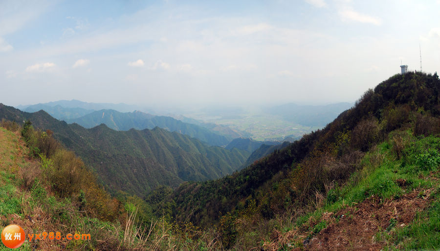
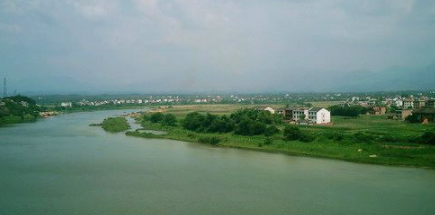
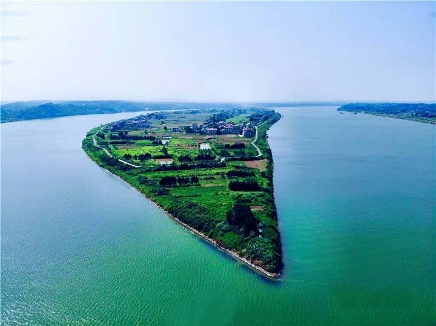
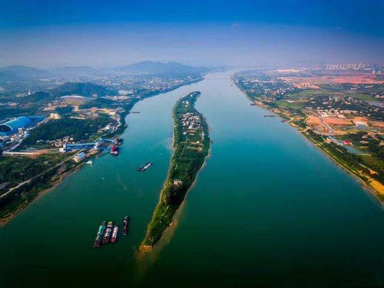
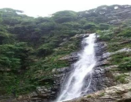
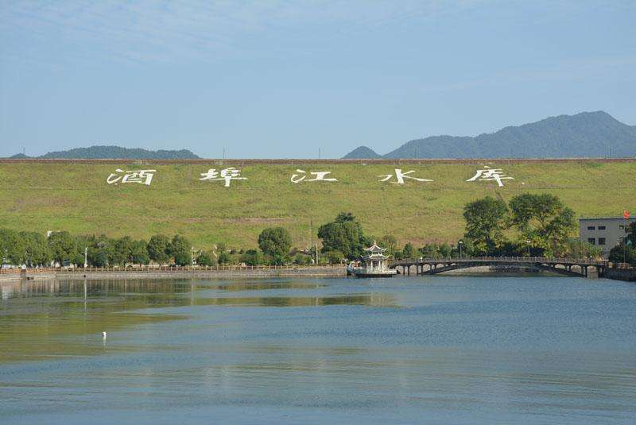
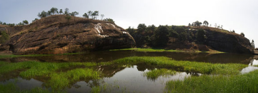
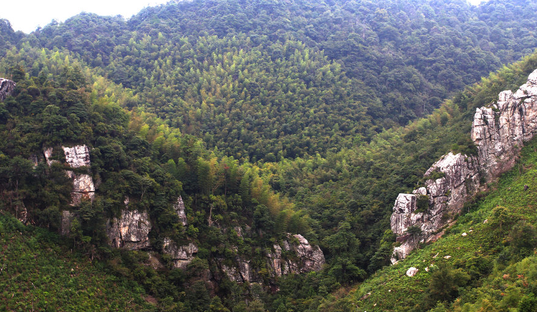
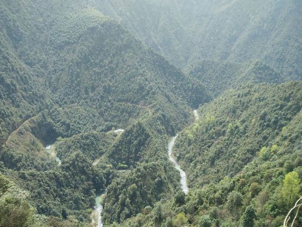

地形地貌
株洲市位于罗霄山脉西麓，
南岭山脉至江汉平原的倾斜地
段上，市域总的地势东南高、
西北低。北中部地形岭谷相间，
盆地呈带状展布；东南部多为
山地，山峦迭障，地势雄伟；
平原沿湘江及支流两岸分布。
株洲市的山地以市境东、南
部的炎陵县、茶陵县北部、攸县
东南部最为集中，市境北部的醴
陵市官庄一带及西部的醴陵、攸
县、渌口区三县交界处亦有少量
分布。境内山脉属罗霄山脉，有
万洋山、八面山、武功山、高峰
山、箭杆山等支脉，山峦起伏，
雄伟壮丽。
-

万洋山系
万洋山系为湘赣两省界山之一，位于湘赣边境南部，跨江西省永新、井冈山、宁冈、遂川和湖南省茶陵县东南部、炎陵县中北部，南北走向，为湘江支流，水和赣江支流遂川江的分水岭。山峰海拔多在1500米左右。 -
炎陵县酃峰
万洋山系为湘赣两省界山之一，位于湘赣边境南部，跨江西省永新、井冈山、宁冈、遂川和湖南省茶陵县东南部、炎陵县中北部，南北走向，为湘江支流，水和赣江支流遂川江的分水岭。山峰海拔多在1500米左右。 -

八面山系
万洋山系为湘赣两省界山之一，位于湘赣边境南部，跨江西省永新、井冈山、宁冈、遂川和湖南省茶陵县东南部、炎陵县中北部，南北走向，为湘江支流，水和赣江支流遂川江的分水岭。山峰海拔多在1500米左右。 -
武功山系
万洋山系为湘赣两省界山之一，位于湘赣边境南部，跨江西省永新、井冈山、宁冈、遂川和湖南省茶陵县东南部、炎陵县中北部，南北走向，为湘江支流，水和赣江支流遂川江的分水岭。山峰海拔多在1500米左右。 -

高峰山系
万洋山系为湘赣两省界山之一，位于湘赣边境南部，跨江西省永新、井冈山、宁冈、遂川和湖南省茶陵县东南部、炎陵县中北部，南北走向，为湘江支流，水和赣江支流遂川江的分水岭。山峰海拔多在1500米左右。 -
箭杆山系
万洋山系为湘赣两省界山之一，位于湘赣边境南部，跨江西省永新、井冈山、宁冈、遂川和湖南省茶陵县东南部、炎陵县中北部，南北走向，为湘江支流，水和赣江支流遂川江的分水岭。山峰海拔多在1500米左右。
-
平岗区丘陵
万洋山系为湘赣两省界山之一，位于湘赣边境南部，跨江西省永新、井冈山、宁冈、遂川和湖南省茶陵县东南部、炎陵县中北部，南北走向，为湘江支流，水和赣江支流遂川江的分水岭。山峰海拔多在1500米左右。 -
岗丘区丘陵
万洋山系为湘赣两省界山之一，位于湘赣边境南部，跨江西省永新、井冈山、宁冈、遂川和湖南省茶陵县东南部、炎陵县中北部，南北走向，为湘江支流，水和赣江支流遂川江的分水岭。山峰海拔多在1500米左右。
-
湘江沿河平原
万洋山系为湘赣两省界山之一，位于湘赣边境南部，跨江西省永新、井冈山、宁冈、遂川和湖南省茶陵县东南部、炎陵县中北部，南北走向，为湘江支流，水和赣江支流遂川江的分水岭。山峰海拔多在1500米左右。 -

渌水、洣水、攸水的溪谷平原
万洋山系为湘赣两省界山之一，位于湘赣边境南部，跨江西省永新、井冈山、宁冈、遂川和湖南省茶陵县东南部、炎陵县中北部，南北走向，为湘江支流，水和赣江支流遂川江的分水岭。山峰海拔多在1500米左右。 -
攸县东部漕泊石灰岩地区溶蚀平原
万洋山系为湘赣两省界山之一，位于湘赣边境南部，跨江西省永新、井冈山、宁冈、遂川和湖南省茶陵县东南部、炎陵县中北部，南北走向，为湘江支流，水和赣江支流遂川江的分水岭。山峰海拔多在1500米左右。 -
醴攸盆地
万洋山系为湘赣两省界山之一，位于湘赣边境南部，跨江西省永新、井冈山、宁冈、遂川和湖南省茶陵县东南部、炎陵县中北部，南北走向，为湘江支流，水和赣江支流遂川江的分水岭。山峰海拔多在1500米左右。 -
茶陵盆地
万洋山系为湘赣两省界山之一，位于湘赣边境南部，跨江西省永新、井冈山、宁冈、遂川和湖南省茶陵县东南部、炎陵县中北部，南北走向，为湘江支流，水和赣江支流遂川江的分水岭。山峰海拔多在1500米左右。
-
株洲境内湘江风光
万洋山系为湘赣两省界山之一，位于湘赣边境南部，跨江西省永新、井冈山、宁冈、遂川和湖南省茶陵县东南部、炎陵县中北部，南北走向，为湘江支流，水和赣江支流遂川江的分水岭。山峰海拔多在1500米左右。 -
湘江河州
万洋山系为湘赣两省界山之一，位于湘赣边境南部，跨江西省永新、井冈山、宁冈、遂川和湖南省茶陵县东南部、炎陵县中北部，南北走向，为湘江支流，水和赣江支流遂川江的分水岭。山峰海拔多在1500米左右。 -

湘江挽洲
万洋山系为湘赣两省界山之一，位于湘赣边境南部，跨江西省永新、井冈山、宁冈、遂川和湖南省茶陵县东南部、炎陵县中北部，南北走向，为湘江支流，水和赣江支流遂川江的分水岭。山峰海拔多在1500米左右。 -
湘江空洲
万洋山系为湘赣两省界山之一，位于湘赣边境南部，跨江西省永新、井冈山、宁冈、遂川和湖南省茶陵县东南部、炎陵县中北部，南北走向，为湘江支流，水和赣江支流遂川江的分水岭。山峰海拔多在1500米左右。 -

湘江古桑洲
万洋山系为湘赣两省界山之一，位于湘赣边境南部，跨江西省永新、井冈山、宁冈、遂川和湖南省茶陵县东南部、炎陵县中北部，南北走向，为湘江支流，水和赣江支流遂川江的分水岭。山峰海拔多在1500米左右。 -
渌水风光
万洋山系为湘赣两省界山之一，位于湘赣边境南部，跨江西省永新、井冈山、宁冈、遂川和湖南省茶陵县东南部、炎陵县中北部，南北走向，为湘江支流，水和赣江支流遂川江的分水岭。山峰海拔多在1500米左右。 -
洣水风光
万洋山系为湘赣两省界山之一，位于湘赣边境南部，跨江西省永新、井冈山、宁冈、遂川和湖南省茶陵县东南部、炎陵县中北部，南北走向，为湘江支流，水和赣江支流遂川江的分水岭。山峰海拔多在1500米左右。 -

茶水风光
万洋山系为湘赣两省界山之一，位于湘赣边境南部，跨江西省永新、井冈山、宁冈、遂川和湖南省茶陵县东南部、炎陵县中北部，南北走向，为湘江支流，水和赣江支流遂川江的分水岭。山峰海拔多在1500米左右。 -
攸水风光
万洋山系为湘赣两省界山之一，位于湘赣边境南部，跨江西省永新、井冈山、宁冈、遂川和湖南省茶陵县东南部、炎陵县中北部，南北走向，为湘江支流，水和赣江支流遂川江的分水岭。山峰海拔多在1500米左右。 -

水库
万洋山系为湘赣两省界山之一，位于湘赣边境南部，跨江西省永新、井冈山、宁冈、遂川和湖南省茶陵县东南部、炎陵县中北部，南北走向，为湘江支流，水和赣江支流遂川江的分水岭。山峰海拔多在1500米左右。
-
石灰岩溶洞
万洋山系为湘赣两省界山之一，位于湘赣边境南部，跨江西省永新、井冈山、宁冈、遂川和湖南省茶陵县东南部、炎陵县中北部，南北走向，为湘江支流，水和赣江支流遂川江的分水岭。山峰海拔多在1500米左右。 -
石灰岩溶洞
万洋山系为湘赣两省界山之一，位于湘赣边境南部，跨江西省永新、井冈山、宁冈、遂川和湖南省茶陵县东南部、炎陵县中北部，南北走向，为湘江支流，水和赣江支流遂川江的分水岭。山峰海拔多在1500米左右。
-
茶陵丹霞穿崖洞石梁桥
万洋山系为湘赣两省界山之一，位于湘赣边境南部，跨江西省永新、井冈山、宁冈、遂川和湖南省茶陵县东南部、炎陵县中北部，南北走向，为湘江支流，水和赣江支流遂川江的分水岭。山峰海拔多在1500米左右。 -

岩峰
万洋山系为湘赣两省界山之一，位于湘赣边境南部，跨江西省永新、井冈山、宁冈、遂川和湖南省茶陵县东南部、炎陵县中北部，南北走向，为湘江支流，水和赣江支流遂川江的分水岭。山峰海拔多在1500米左右。 -
岩沟
万洋山系为湘赣两省界山之一，位于湘赣边境南部，跨江西省永新、井冈山、宁冈、遂川和湖南省茶陵县东南部、炎陵县中北部，南北走向，为湘江支流，水和赣江支流遂川江的分水岭。山峰海拔多在1500米左右。 -

岩窟
万洋山系为湘赣两省界山之一，位于湘赣边境南部，跨江西省永新、井冈山、宁冈、遂川和湖南省茶陵县东南部、炎陵县中北部，南北走向，为湘江支流，水和赣江支流遂川江的分水岭。山峰海拔多在1500米左右。 -
岩墙
万洋山系为湘赣两省界山之一，位于湘赣边境南部，跨江西省永新、井冈山、宁冈、遂川和湖南省茶陵县东南部、炎陵县中北部，南北走向，为湘江支流，水和赣江支流遂川江的分水岭。山峰海拔多在1500米左右。 -
岩墙
万洋山系为湘赣两省界山之一，位于湘赣边境南部，跨江西省永新、井冈山、宁冈、遂川和湖南省茶陵县东南部、炎陵县中北部，南北走向，为湘江支流，水和赣江支流遂川江的分水岭。山峰海拔多在1500米左右。 -
岩柱
万洋山系为湘赣两省界山之一，位于湘赣边境南部，跨江西省永新、井冈山、宁冈、遂川和湖南省茶陵县东南部、炎陵县中北部，南北走向，为湘江支流，水和赣江支流遂川江的分水岭。山峰海拔多在1500米左右。
-
花岗岩巨石——飞来石
万洋山系为湘赣两省界山之一，位于湘赣边境南部，跨江西省永新、井冈山、宁冈、遂川和湖南省茶陵县东南部、炎陵县中北部，南北走向，为湘江支流，水和赣江支流遂川江的分水岭。山峰海拔多在1500米左右。 -
吕村花岗岩
万洋山系为湘赣两省界山之一，位于湘赣边境南部，跨江西省永新、井冈山、宁冈、遂川和湖南省茶陵县东南部、炎陵县中北部，南北走向，为湘江支流，水和赣江支流遂川江的分水岭。山峰海拔多在1500米左右。 -

神农谷花岗岩地貌
万洋山系为湘赣两省界山之一，位于湘赣边境南部，跨江西省永新、井冈山、宁冈、遂川和湖南省茶陵县东南部、炎陵县中北部，南北走向，为湘江支流，水和赣江支流遂川江的分水岭。山峰海拔多在1500米左右。 -
严塘镇花岗岩地貌
万洋山系为湘赣两省界山之一，位于湘赣边境南部，跨江西省永新、井冈山、宁冈、遂川和湖南省茶陵县东南部、炎陵县中北部，南北走向，为湘江支流，水和赣江支流遂川江的分水岭。山峰海拔多在1500米左右。 -

炎陵花岗岩河谷
万洋山系为湘赣两省界山之一，位于湘赣边境南部，跨江西省永新、井冈山、宁冈、遂川和湖南省茶陵县东南部、炎陵县中北部，南北走向，为湘江支流，水和赣江支流遂川江的分水岭。山峰海拔多在1500米左右。